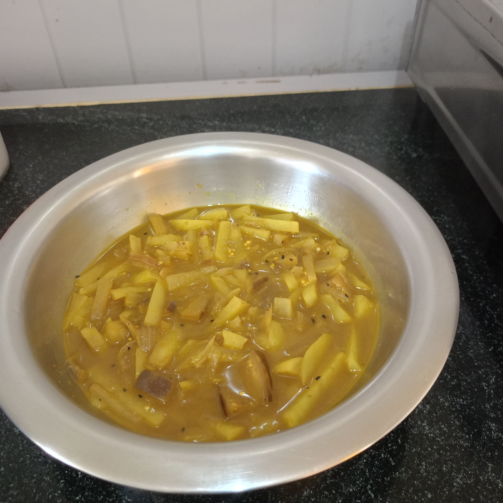
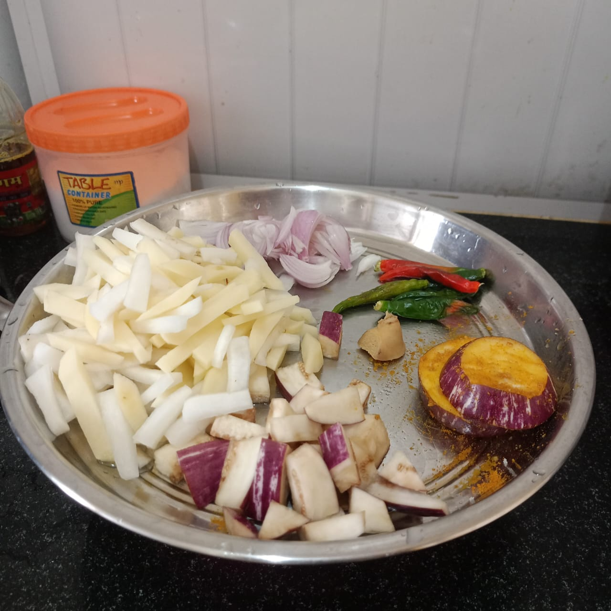

SPICELO STORY
Aloo Baingan Curry
Learn how to make homemade Aloo Baingan Curry with potatoes, brinjal, green chillies, ginger and simple Indian spices. This comforting vegetable curry is perfect for two people and tastes delicious with white rice.

The Story Behind This Dish
One morning, my wife told me that she was going to make Aloo Baingan for our meal. She used to prepare this dish even before we got married.
I asked her if I could help her in the kitchen. She agreed, and we prepared the curry together, sharing the little jobs as we cooked.
When it was ready, we enjoyed our homemade Aloo Baingan Curry with white rice. For me, this recipe is also a lovely memory of cooking together.
10 min
40 min
Easy
Ingredients for Aloo Baingan Curry
For 2 persons

- 4 medium potatoes, cut into pieces
- 2 medium brinjals, cut into pieces
- 1 teaspoon cumin paste
- 1 onion, sliced
- ½ teaspoon turmeric powder
- Salt to taste
- 2 tablespoons oil
- 4 green chillies
- 1 teaspoon ginger paste
- ½ teaspoon black cumin (kalonji)
- 1 glass water
- A little garam masala
🎬 Aloo Baingan Curry Video
How to Make Aloo Baingan Curry
- Wash and cut the potatoes, brinjals and onion. Prepare the cumin paste, ginger paste and other ingredients.
- Fry the green chillies for about one minute. Prepare the cumin paste.
- Heat 2 tablespoons of oil in a kadai. Add black cumin and sliced onion, then fry.
- Add the potatoes and brinjals. Add cumin paste, ginger paste, turmeric powder and salt. Mix carefully and cook for about 15 minutes.
- Add one glass of water and cook for about 15 minutes, or until the potatoes become tender.
- Add a little garam masala and cook for another 10 minutes.
- Your homemade Aloo Baingan Curry is ready. Serve hot with white rice.
Total time: approximately 50 minutes.
Tips for Making Delicious Aloo Baingan Curry
- Cut the potatoes and brinjals into similar-sized pieces so they cook evenly.
- Stir carefully so the brinjal pieces do not break apart too much.
- Cook until the potatoes are tender before finishing the curry.
- Add water according to how thick or light you want the gravy.
- Add garam masala near the end for a warm aroma.
- Serve hot with white rice.
Aloo Baingan Curry FAQ
How many people does this recipe serve?
This recipe is designed to serve approximately 2 people.
What are the main ingredients?
The main ingredients are potatoes, brinjals, onion, green chillies, ginger, cumin and Indian spices.
What can I serve with Aloo Baingan Curry?
This homemade vegetable curry can be enjoyed with white rice.
How long does this recipe take?
The total preparation and cooking time is approximately 50 minutes.
My Food Note
This Aloo Baingan Curry reminds me of a simple moment in our kitchen: my wife and I preparing a meal together and enjoying it with white rice. Sometimes, the memories we make while cooking are just as special as the food itself.
💬 Comments